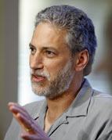

|
| |
| |
Moderator and Speaker Biographies |
|
Biofuels: Continuing Shifts in the Industry and Long-Term Outlook pdf 
Michael Schaal is the Director of the U.S. Energy Information Administration’s Oil and Gas Division. His primary focus is on producing the oil and natural gas and biofuels projections for EIA’s Annual Energy Outlook. Mr. Schaal’s prior experience includes working as a professional engineer with Bechtel Corporation of San Francisco where he was involved in economic analysis, engineering, construction, and operations of first-of-a-kind facilities, and as a consultant with Energy Ventures Analysis, Inc. advising clients on natural gas and power sector issues.
Mr. Schaal received his B.S. in electrical engineering from the California State University in 1986, and his Master’s degree in Mineral Economics from The Pennsylvania State University in 1995.
|
|
National Renewable Fuel Standard Program –2010 and Beyond pdf
Paul Argyropoulos is a Senior Policy Advisor in the U.S. Environmental Protection Agency’s (EPA) Office of Transportation & Air Quality. Mr. Argyropoulos is responsible for providing advice and analysis to the Office Director on a broad range of transportation program issues with a focus on fuels. He chaired EPA’s intra-agency work group for the national renewable fuels standard programs implemented under both the Energy Policy Act of 2005 and the Energy Independence and Security Act of 2007.
Prior to his current position, Mr. Argyropoulos spent seven years with Hart Downstream Energy Services serving in a number of positions, including as Executive Director of the International Fuel Quality Center and Director of U.S. Federal Affairs for Hart Energy Consulting. Before joining Hart, he spent two years with the American Petroleum Institute (API), where he provided regulatory and policy coordination supporting API’s Downstream and Fuels Committees and related workgroups on national and state fuel regulatory and policy issues.
Mr. Argyropoulos began his career at EPA where he also served for more than 13 years in EPA’s Office of Mobile Sources supporting development, implementation and enforcement of federal and state regulations, with a focus on fuel quality and vehicle emissions programs. |
|
Biofuels : Continuing Shifts in the
Industry & Long-Term Outlook pdf
R. Brooke Coleman has been involved with transportation fuels at the regulatory and policy levels in California and other states since 1998. He led a national campaign to ban the gasoline additive MTBE, and currently promotes renewable fuels as a near-term strategy to reduce foreign oil dependence and mitigate climate change. Mr. Coleman served as the Climate Program Director at Bluewater Network in San Francisco, and later founded or co-founded several organizations, including the New Fuels Alliance, the California Renewable Fuels Partnership, and the Northeast Biofuels Collaborative. He spearheaded an effort in Massachusetts to pass the first ever cellulosic ethanol excise tax exemption, and is one of the leading national advocates for advanced biofuels at the state and federal level. While studying law, Mr. Coleman worked on several landmark environmental cases, including the largest ever settlement in Clean Water Act history and a common-law climate change lawsuit filed on behalf of 11 state attorneys general. He also serves as the spokesman for FoodPriceTruth.org, a website devoted to balancing the debate about food versus fuel.
Mr. Coleman is a graduate of Wesleyan University, the Northeastern University School of Law, and is a member of the Massachusetts State Bar. |
|
EIA’s Long-Term Biofuels Outlook pdf
Peter Gross has worked with EIA as an analyst in the Office of Integrated Analysis and Forecasting for almost three years specializing in biofuels market and policy analysis as well as biofuels supply projections. In addition, he has also worked in the areas of refinery energy use and the impact of climate legislation on the refining industry. Mr. Gross holds advanced degrees in chemistry and statistics and worked as a teacher in New York City before joining EIA.
|
|  |
Biomass Feedstocks and the Climate Implications of Bioenergy pdf
Steven Hamburg, Chief Scientist, is Environmental Defense Fund’s (EDF) public voice for its commitment to science-based advocacy and is responsible for the scientific integrity of EDF’s positions and programs. Prior to coming to EDF, Dr. Hamburg was on the faculty of Brown University where he founded and directed the Global Environment Program at the Watson Institute for International Studies as well as being involved in teaching environmental science and ecosystem ecology. In addition to his administrative and teaching responsibilities, Dr. Hamburg headed a research group that focused on the effects of human disturbance on the biogeochemistry of the northern hardwood forests of Central New Hampshire. He started his academic career at the University of Kansas where he served as both the Director of the Environmental Studies Program and as Environmental Ombudsman.
Dr. Hamburg has published widely on a diversity of topics (e.g. biogeochemistry, climate change impacts on forests, and land-use history) including in Nature and Science and has served as a lead author for the IPCC. Dr. Hamburg was twice awarded an Environmental Merit award by the U.S. Environmental Protection Agency for his climate change-related activities and spent a year at Harvard as a Bullard Fellow. He served for several years as the Vice-chair of the International Long-term Ecological Research Network, as well as on the boards of directors of several environmental organizations.
Dr. Hamburg holds Ph.D. and M.F.S. degrees from Yale University, and a B.A. from Vassar College. |
| |